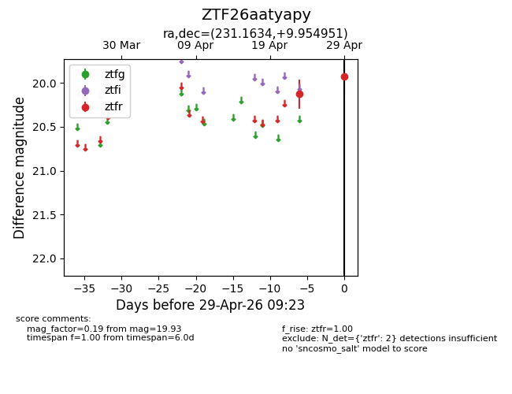
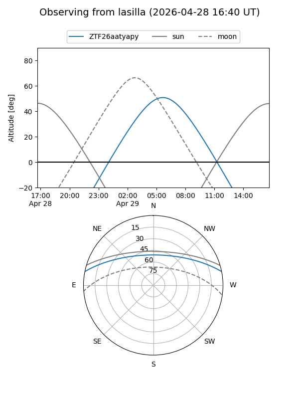
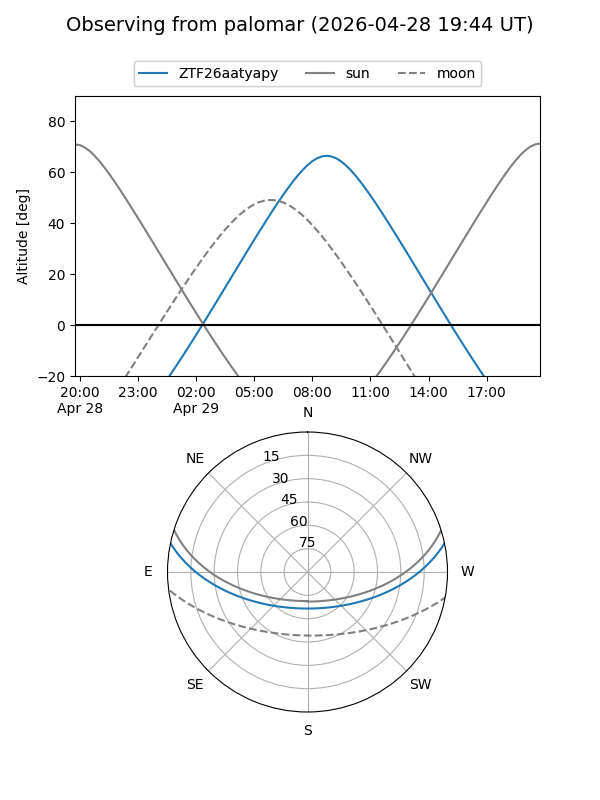

ZTF26aatyapy
Target ZTF26aatyapy at 2026-04-29 09:26
Aliases and brokers:
FINK: link
Lasair: link
ALeRCE: link
alt names
ZTF26aatyapy (ztf,fink_ztf)
Coordinates:
equatorial (ra, dec) = 231.1634,+9.95495
equatorial (HMS+DMS) = 15:24:39.21,+09:57:17.83
galactic (l, b) = (14.9133,+50.05996)
Flags:
Photometry:
last ztfr=19.93
2 ztfr detections
Lightcurve

Visibility


Additional plots